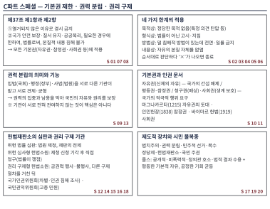

| 번호 | 정답 | 난도 | 핵심 개념 | 핵심 근거 |
|---|---|---|---|---|
| 01 | ② | D3 | 헌법 제37조 제1항과 제2항의 구분 | 제37조 제1항은 ‘열거되지 않았다’는 이유로 경시하지 못하게 할 뿐 제한 자체를 금지하지 않으며, 제한은 제2항의 요건(법률 등)을 갖추어야 한다. |
| 02 | ① | D4 | 기본권 제한 사례의 공통점과 차이점 | (가)는 법률이 아닌 고시로 제한해 형식상 한계 위반. (나)는 법률에 근거하고 목적도 정당하나 덜 침해적인 방법이 있는데도 예외 없는 퇴학을 규정해 방법상 한계 위반. |
| 03 | ② | D4 | 네 가지 한계의 충족 여부 표 해석 | 네 가지 한계를 모두 갖추어야 한다. (나)는 방법상 한계도 위반했고, (라)는 내용상 한계까지 위반했다. |
| 04 | ④ | D5 | 단계별 판단과 제37조 제2항 | A는 방법상에서 ×이므로 내용상은 ‘–’. B는 방법상이 ‘–’이므로 바로 앞 형식상이 ×(법률 근거 없음). E는 앞 세 단계가 ○인데 전체가 부적합하므로 내용상이 ×. |
| 05 | ④ | D4 | 두 법률안의 비교(방법상 한계) | 두 안 모두 목적·형식은 충족하나, 같은 목적을 덜 제한적인 방법으로 달성할 수 있는데도 전면·연중 금지를 택한 을안이 방법상 한계 위반 가능성이 크다. 예외 허용은 목적과 무관하다. |
| 06 | ② | D5 | 위헌 결정 사유의 분포(자료 해석) | 방법상 18/30=60 %, 24/40=60 %로 같다. 형식상은 6/30=20 %, 6/40=15 %로 2023년이 더 낮다. 내용상은 3건과 6건이다. |
| 07 | ④ | D4 | 기본권의 종류와 제한(유형별 적용) | 기본권의 종류와 관계없이 제한에는 제37조 제2항의 요건이 적용된다. 사회권이라고 해서 법률로 다룰 수 없는 것은 아니다. |
| 08 | ⑤ | D5 | 제10조·제37조 제1항·제2항의 종합 | 열거되지 않았다는 이유로 권리를 경시할 수 없고(제37조 제1항), 이 권리를 제한하는 법률도 제37조 제2항의 요건을 지켜야 한다. ‘열거되지 않음’이 곧 ‘제한 불가’를 뜻하지는 않는다. |
| 09 | ① | D3 | 입법·행정·사법의 역할 | 법률 제정은 입법부인 국회, 법률 집행과 정책 실행은 행정부인 정부, 재판은 사법부인 법원이 맡는다. |
| 10 | ④ | D5 | 인권 문서의 내용 비교 | 마그나카르타(1215)는 왕권을 법으로 제한, 인민헌장(1838)은 참정권 확대 요구, 바이마르 헌법(1919)은 인간다운 생활을 보장하는 사회권을 명시했다. (다)는 국가의 적극적 역할을 요구하는 내용이다. |
| 11 | ① | D4 | 국가의 적극적 행위를 요구하는 기본권 | 청구권(다)은 국가에 배상·구제를, 사회권(라)은 인간다운 생활의 보장을 요구한다. (가)는 평등권, (나)는 자유권, (마)는 참정권이다. |
| 12 | ③ | D4 | 권리 구제 기관의 선택 | 고충 민원은 국민권익위원회, 차별 조사·구제는 국가인권위원회이다. 위헌 법률 심판 제청은 재판 중인 법원에 신청하고, 기각되면 헌법재판소에 헌법소원을 청구한다. |
| 13 | ③ | D4 | 권력 분립의 실질적 기능(대화) | 권력 분립은 기관을 나누는 데서 그치지 않고 상호 견제·균형이 작동해야 하며, 그 목적은 권력 남용을 막아 국민의 자유와 권리를 보장하는 것이다. |
| 14 | ② | D5 | 헌법소원의 유형별 청구·인용(자료 해석) | 위헌 심사형 인용률은 8/40=10/50=20 %. 권리 구제형은 8/160=5 %, 21/210=10 %. 청구 증가율은 위헌 심사형 25 %, 권리 구제형 31.25 %. 2023년 인용은 위헌 심사형 10건, 권리 구제형 21건. |
| 15 | ③ | D4 | 권리 구제형 헌법소원의 절차도 | 권리 구제형 헌법소원은 다른 법적 구제 절차를 거친 뒤 국민이 헌법재판소에 청구한다. 법률의 위헌 여부가 재판의 전제일 때 법원이 제청하는 것은 위헌 법률 심판이다. |
| 16 | ④ | D5 | 위헌 법률 심판과 헌법소원의 비교(표) | (가) 위헌 법률 심판, (나) 권리 구제형 헌법소원, (다) 위헌 심사형 헌법소원이다. (다)는 법률의 위헌 여부가 쟁점이다. |
| 17 | ③ | D4 | 인권 보장의 제도적 장치 | 법에 따른 통치=법치주의, 기관 분리와 견제=권력 분립, 선거와 정당 경쟁=민주적 선거·복수 정당제, 위헌 심판=헌법재판소, 주권은 국민=국민 주권. |
| 18 | ② | D5 | 위헌 심사형 헌법소원의 경로(절차도) | 법원이 위헌 법률 심판 제청 신청을 기각하면 신청인은 헌법재판소에 직접 헌법소원을 청구할 수 있다(위헌 심사형). 권리 구제형은 공권력의 행사가 직접 기본권을 침해한 경우이다. |
| 19 | ① | D5 | 롤스의 시민 불복종(정의의 원칙과 조건) | 시민 불복종은 의도적 위법이지만 공적·비폭력적이며 정의관에 호소하고 법적 결과를 받아들인다. (다)는 이 조건을 충족하고, (라)는 사적 이익 추구라 정의관에 호소하는 행위가 아니다. |
| 20 | ⑤ | D4 | 시민 참여·권리 구제·시민 불복종의 구분 | (가)·(나)는 법이 마련한 참여·구제 절차이다. (다)는 공개적·비폭력적이며 처벌을 수용하는 위법 행위이므로 시민 불복종이고, (라)는 비공개·폭력적이라 해당하지 않는다. |
